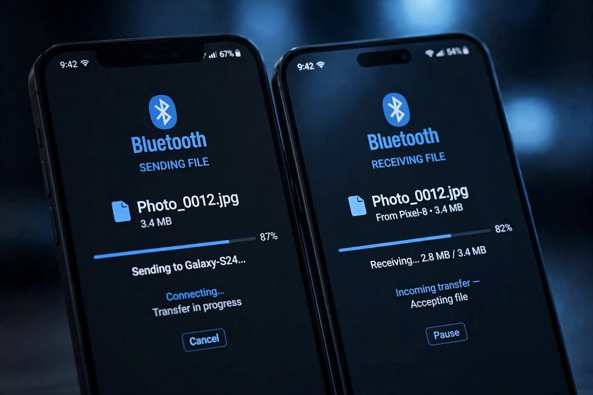

Home > Guides > How to Share Files Using Bluetooth: A Simple Guide
How to Share Files Using Bluetooth: A Simple Guide
A practical guide from PairDrop.

Bluetooth is the oldest wireless sharing method on phones and laptops, and it is still useful because it is almost everywhere. It needs no Wi-Fi, no cable and no data, and it works between many different devices. Its weakness is speed: it is slow for large files and it needs the devices to stay close together. This guide explains how Bluetooth sharing works, how to pair devices, how to send different kinds of files, and how to fix the problems that make people give up on it. Used for the right files, Bluetooth is a dependable tool to have in your pocket.
Pair your devices first
Bluetooth sharing starts with pairing. Turn Bluetooth on both devices, make one of them visible, and select it from the other device's Bluetooth list. Confirm the code that appears on both screens. Pairing only needs to be done once; after that the devices remember each other. If pairing fails, turn Bluetooth off and on again on both devices, move them closer, and try again. Remove old or unused pairings from time to time, because a long list of forgotten devices can cause confusion. Keep the devices within a few metres during pairing, and keep the screen awake until the pairing is confirmed.
Send files step by step
Once paired, sending a file is simple. Open the file on the sending device, choose Share, and pick Bluetooth, then choose the paired device. On the receiving device, accept the transfer when prompted and choose where to save the file. Small files such as documents, contacts and a few photos arrive in seconds. Larger files take longer, so keep both devices close and awake until the transfer finishes. Do not switch apps or lock the screen during a large transfer if you can avoid it. If the receiving device does not show a prompt, check its notifications and its Bluetooth settings for a pending request.
Know the limits of Bluetooth
Bluetooth is best for small files. A document, a photo or a short audio clip is ideal. A long video or a large folder is a poor fit, because the transfer can take a very long time and is more likely to be interrupted. Bluetooth also has a limited range, usually a few metres, and walls and other wireless signals can interfere. If a transfer keeps failing, the file is probably too large for Bluetooth or the devices are too far apart. In that case, switch to Wi-Fi Direct, a hotspot or a cable. Choosing the right tool for the file size is the key to a frustration-free transfer.
Fix common Bluetooth problems
If Bluetooth will not pair, restart Bluetooth on both devices and remove the old pairing before trying again. If a transfer starts but never finishes, move the devices closer, charge both batteries, and try a smaller file first to test the connection. If the receiving device cannot find the file, check its downloads or Bluetooth folder, because received files are not always saved where you expect. Update the device software if Bluetooth is unreliable, because updates often fix connection bugs. If one device is very old, its Bluetooth version may be slower, so be patient or use a different method for large files.
Quick tips
- Pair once, then reuse the pairing
- Keep devices within a few metres
- Use Bluetooth for small files only
- Check the Downloads folder for received files
Frequently asked questions
How far can Bluetooth share files?
Usually a few metres in the same room. Walls and interference reduce the range, so keep the devices close together for a reliable transfer.
Why is Bluetooth so slow for videos?
Bluetooth was designed for small amounts of data, such as audio and documents. A video is hundreds of times larger, so it takes much longer than Wi-Fi or a cable.
Where do Bluetooth received files go?
Most phones save them in a Bluetooth or Downloads folder, or in the app that handles the file type. Check the notification after the transfer for a link to the file.